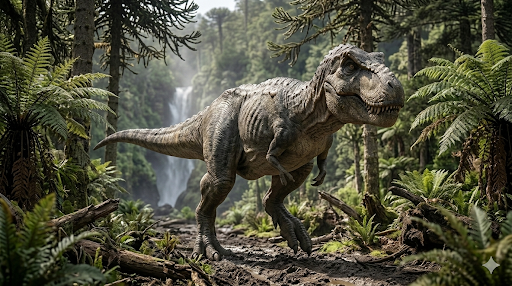

טירנוזאורוס רקס
Tyrannosaurus rex

נתוני בסיס
§ מקור השם (אטימולוגיה)
השם המדעי המלא מייצג את מעמדו הדומיננטי בשרשרת המזון הקדומה.
| חלקי השם | שפת מקור | משמעות מדויקת |
|---|---|---|
| Tyrannos | יוונית עתיקה | עריץ / רודן |
| Sauros | יוונית עתיקה | לטאה / זוחל |
| Rex | לטינית | מלך |
נסיבות הגילוי (היסטורי ומודרני)
הגילוי הראשון (1900-1902)
הגילוי ההיסטורי הראשון של טי-רקס בוצע ב-1900 על ידי צייד המאובנים האגדי ברנום בראון במזרח ויומינג. התגלית המכוננת הגיעה שנתיים מאוחר יותר ב-1902, בתצורת "הל קריק" (Hell Creek) במונטנה. בשנת 1905, נשיא המוזיאון האמריקאי לתולדות הטבע, הנרי פיירפילד אוסבורן, הגדיר ונתן לדינוזאור את השם המדעי המפורסם שלו.
הגילוי של "סו" (12 באוגוסט 1990)
התגלית המפורסמת ביותר התרחשה בשמורת האינדיאנים "נהר שאיין" בדרום דקוטה. המשלחת נתקעה במקום בגלל תקר (פנצ'ר) בגלגל המשאית שלהם. בזמן ששאר חברי הצוות נסעו לעיירה לתקן את הגלגל, הפלאונטולוגית סו הנדריקסון נשארה מאחור ויצאה לסייר ברגל. היא הבחינה בכמה שברי עצמות מבצבצים מצוק - אלו היו השרידים של השלד המושלם ביותר (מעל 90%) והגדול ביותר של טי-רקס שנמצא אי פעם. הגילוי כלל את עצם ה"מזלג" (Furcula) השלמה הראשונה של הטי-רקס, מה שהוכיח אבולוציונית את הקשר ההדוק בין דינוזאורים ציפוריים לעופות של ימינו.
מטרת המשלחות והדרמה מאחורי הקלעים
משלחות תחילת המאה ה-20 (יחסי ציבור ו"מפלצות תצוגה")
המשלחת המקורית של ברנום בראון מומנה על ידי המוזיאון האמריקאי לתולדות הטבע (AMNH) בניו יורק למטרות יוקרה ויחסי ציבור. בעיצומה של יריבות מול מוזיאון קרנגי, המוזיאון בניו יורק חיפש נואשות "מפלצות תצוגה" עצומות שידהימו את הקהל וימכרו כרטיסים.
המשלחת של "בלאק הילס" והמשפט שזעזע את עולם המדע (1990)
משלחת מכון בלאק הילס (Black Hills Institute) בראשות פיטר לארסון יצאה במקור למפות ולחפש מאובנים באזור המסחרי. אך מיד לאחר חילוץ השלד של "סו", פרצה דרמה משפטית אדירה. מכיוון שהמאובן נמצא בשטח של חוואי אינדיאני (מוריס וויליאמס) בתוך שמורה פדרלית, התעוררה השאלה למי שייכות העצמות. הדרמה הגיעה לשיאה כשה-FBI פשט על מכון המחקר, החרים את העצמות וחסם את הגישה למדענים. לאחר מאבק ממושך, נפסק כי השלד שייך לחוואי. בשנת 1997, "סו" נמכרה במכירה פומבית היסטורית בסותבי'ס בסכום שיא של 8.36 מיליון דולר למוזיאון השדה (Field Museum) בשיקגו, במימון תאגידי של מקדונלד'ס ודיסני, כדי להבטיח שהיא תישאר נגישה לציבור הרחב.
אקולוגיה והתנהגות חברתית
הטי-רקס חי ביבשת העתיקה "לארמידיה" (כיום מערב צפון אמריקה). בזכות גודלו ועוצמתו, הוא צד באופן אקטיבי דינוזאורים צמחוניים ענקיים (כמו טריצרטופס), אך גם השתמש בחוש ריח מפותח במיוחד כדי לאתר פגרים ממרחקים. מחקרים פתולוגיים על השלד של "סו" חשפו פציעות רבות, כולל צלעות שבורות שהחלימו וסימני זיהום קשים. החלמה מפציעות כה קשות מעידה על חוסן אדיר, ואולי אף מרמזת על מבנה חברתי שבו הטי-רקסים קיבלו הגנה או מזון מחברי קבוצה אחרים בזמן פציעה.
הישגים וחשיבות אבולוציונית
הישגו האבולוציוני הגדול ביותר של הטי-רקס הוא עוצמת הנשיכה המוחצת שלו, הגבוהה ביותר שנמדדה אי פעם בבעל חיים יבשתי (מעל 35,000 ניוטון / 3.5 טון-כוח). היכולת לרסק עצמות ולשאוב את מח העצם המזין העניקה לו יתרון הישרדותי עצום. הישג מרשים נוסף הוא האנטומיה של הראייה שלו - העיניים שלו פנו קדימה והעניקו לו ראייה בינוקולרית (תלת-ממדית) מדויקת יותר מזו של נץ מודרני, מה שהפך אותו לטורף עילית המסוגל לאמוד מרחקים בדיוק קטלני.